Intros are like the fat on the asado. What matters is the meat.
Changelog — version 1.3 (2026-10-02)
Playback
- Press and hold the Miniplayer to switch between its styles
Library
- When selecting multiple songs, added the option to export the files
Playlists
- Preference so that, when "Use theme color" is enabled, the color can be the accent — or its inverse, white or black
- You can now assign any color (in addition to the fixed suggested ones) and use an emoji as the icon
Appearance
- Theme creator: the color picker now suggests complementary colors based on the one you pick, and generates color palettes
- Added a live preview to the Miniplayer settings section, and the same for Now Playing; going back to the general preview also reflects what you picked
- Playback progress bar customization: choose different styles for the progress bar, the time counters and indicator, and even the "listened up to" point
- Four new alternative icons, for finding joy in life
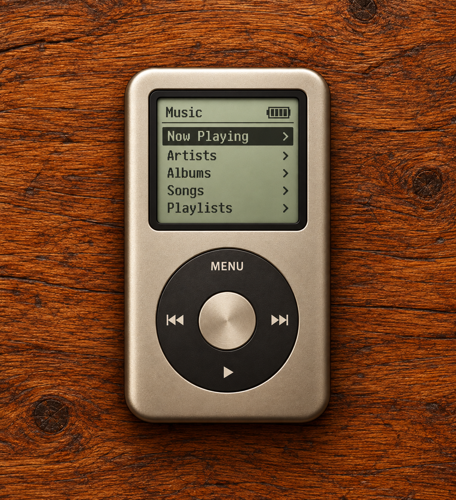
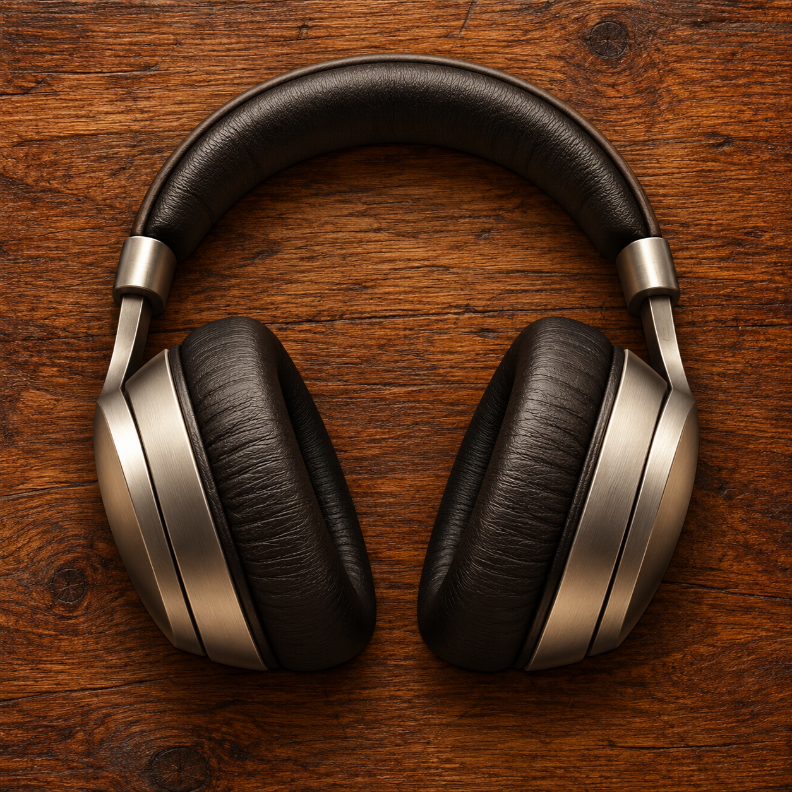
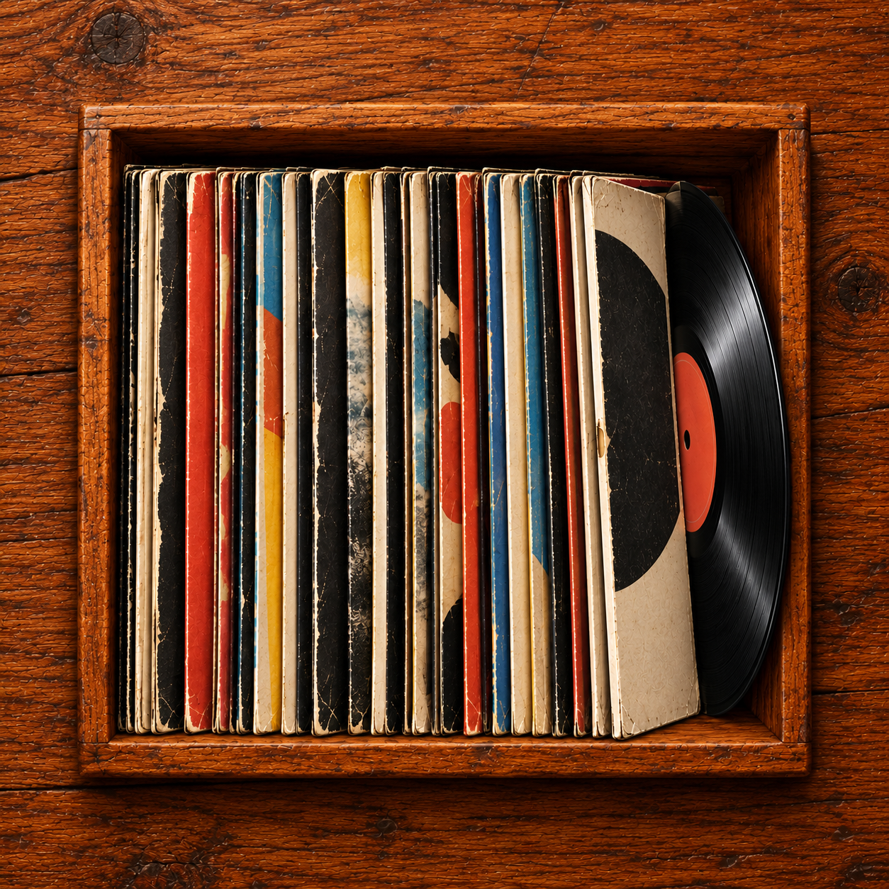
- Now Playing: added a button to switch between styles (Standard / XL)
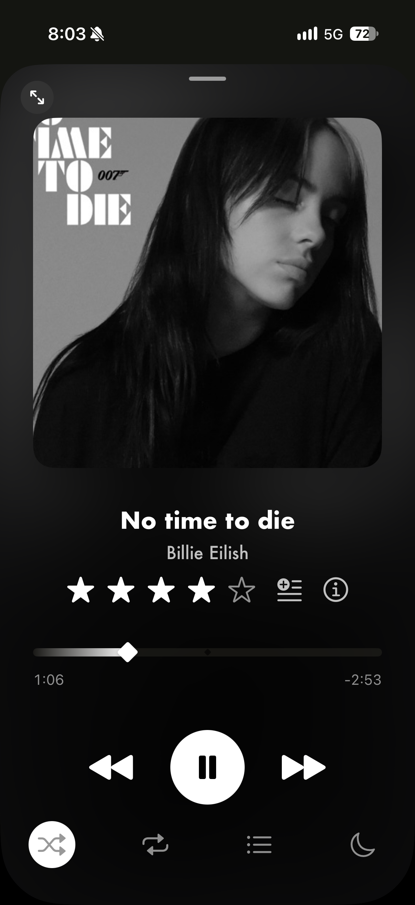
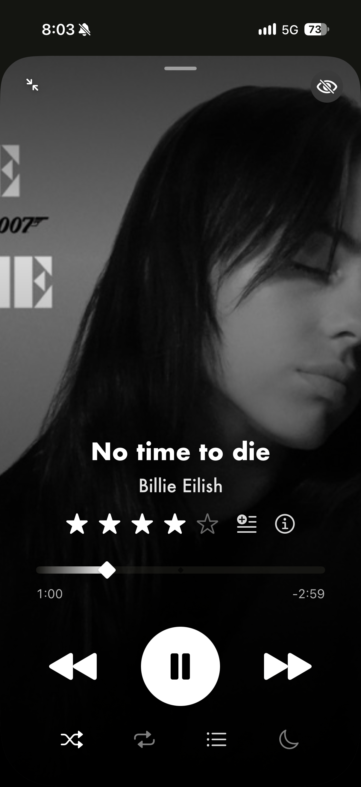
Stats & achievements
- Improved Achievements panel
- New unlockable achievements
- Night Owl / Early Bird — 50 plays between midnight–5AM / 5–8AM
- 30-Day Streak — 30 consecutive days listening to something
- Genre Explorer — 10 different genres with at least one play
- Die-Hard Fan — one artist makes up ≥20% of your total plays
- No Skips — a very low skip rate (the opposite of "Great Skipper")
- Perfectionist — 50 songs rated specifically 5 stars
- A third tier for the ones that already had two: Legend (10,000 plays), One Year (8,760h listened), Legendary Library (5,000 songs), Critic Legend (500 rated)
- Stats:
- New:
- Listening streak (current and record) — consecutive days with at least one play
- Rating distribution — how many songs you have at each rating, plus the % unrated
- This week vs. last week — compares plays from the last 7 days against the previous 7
- Charts, to the delight of economists
- New:
iPad
- Vertical rail for playlists that lets you switch between lists without going back to the list picker. Note: on iPad mini in portrait this shrinks the songs column's visibility, so an option was added in Appearance to disable it
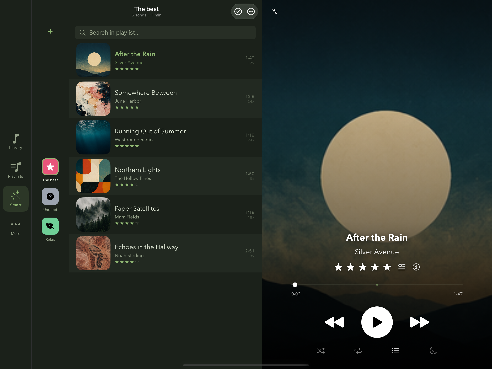
- Column view: pick an artist, then an album, and get to the songs inside it
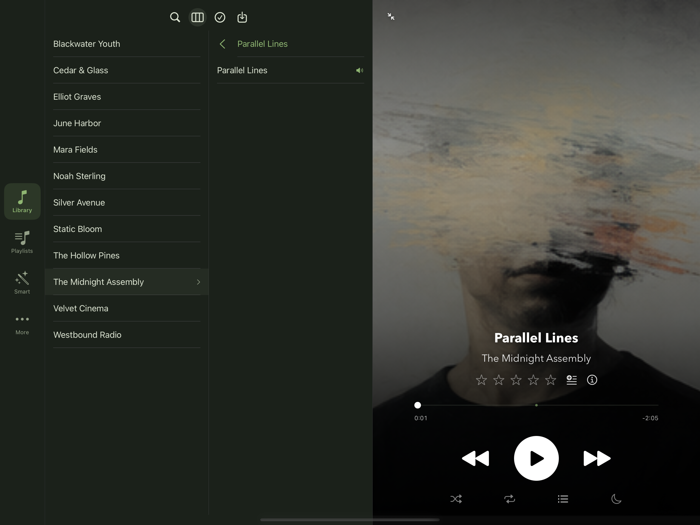
Other
- Initial support for iPhone Duo (a few small things are still missing and will be added in future updates)
- Added a link to bittermate.app in "About"
- Added a new song quote, this time from Incubus
- Widgets: a shortcut to open Bonus Track from the Lock Screen, and two ways to see the current song's cover and control playback (small and medium sizes)
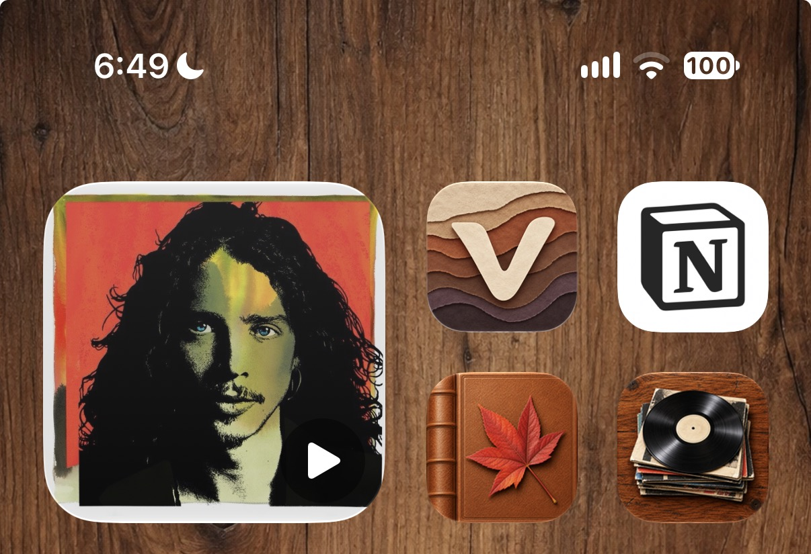
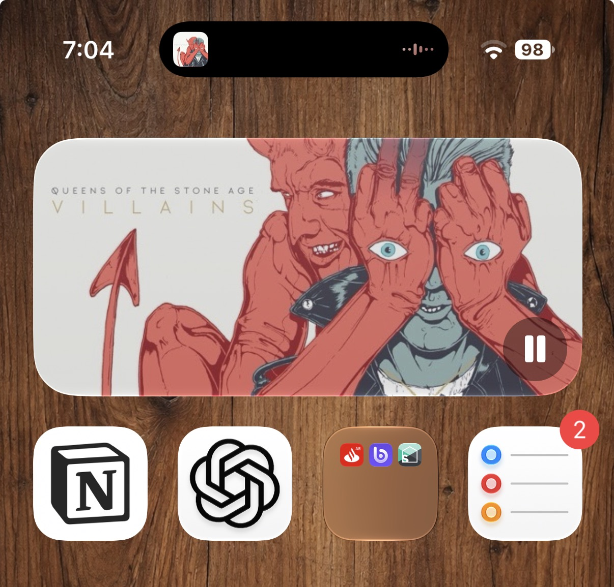
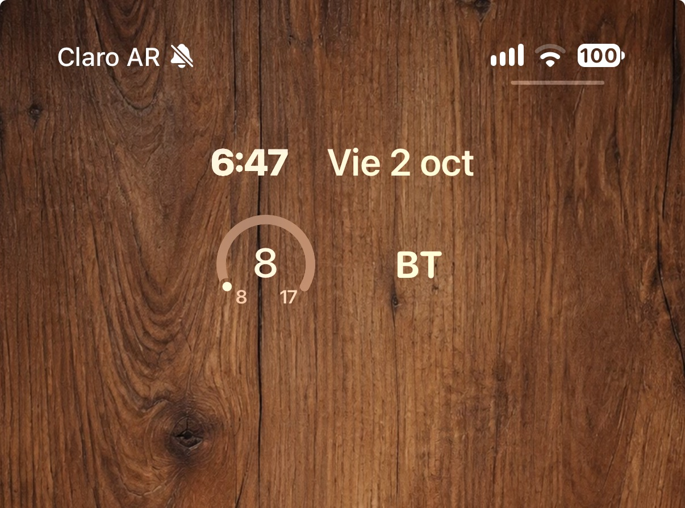
- Here's how they look on an iPhone 17 when the song has no album, with the new icons
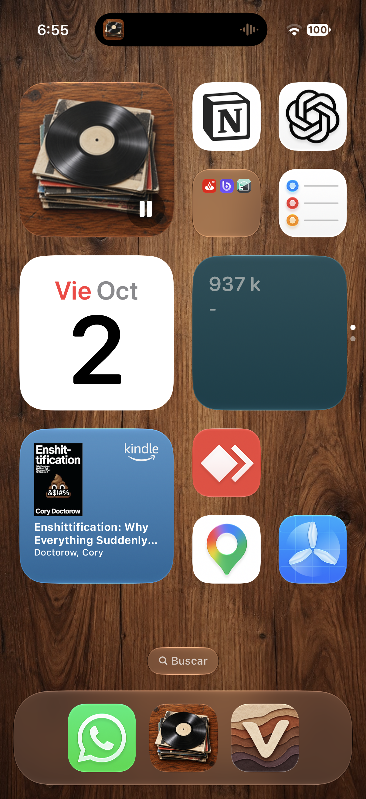
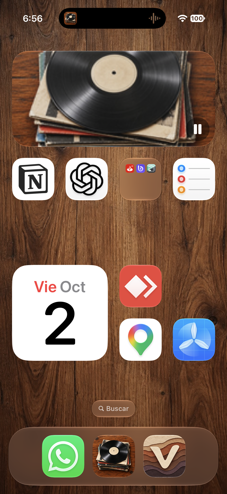
Fixes & improvements
- Layout improvements for lists on iPhone 15 and similar screen sizes
- You had to tap the album cover in the Miniplayer twice to open the Now Playing screen — fixed so it's back to a single tap
- Editing a custom theme no longer requires a long press — buttons were added to edit, duplicate, and delete themes; other shortcomings of the theme creator were fixed
- Playlist customization: removed an icon that no longer renders on recent iOS versions, and renamed the option to Customize (it used to be "Icon", which didn't capture the full extent of what you could customize)
- Volume normalization was rebuilt. If you had it on, I recommend going to Library → Volume → Recalculate all
- Shuffle mode was duplicated in the title and description of the library admin panel
- Now Playing XL wasn't picking up the theme color correctly, even though the preview showed the right colors
- The "Add to list", "Edit song" and "Sleep Timer" panels were rebuilt with translucent material
- Fixed playlist sort menus: the header said "Sort by" instead of just "Sort", and each option repeated "by" again, so it read "Sort by by Name"
- On iPad in portrait with Now Playing in Standard style, all the content was shifted to the right
- On first launch, with an empty library, the Library background showed white while Playlists and Smart Playlists already had the theme color, and there was also a stray line under the Library tab
Enjoy! ;-D
— L.D.